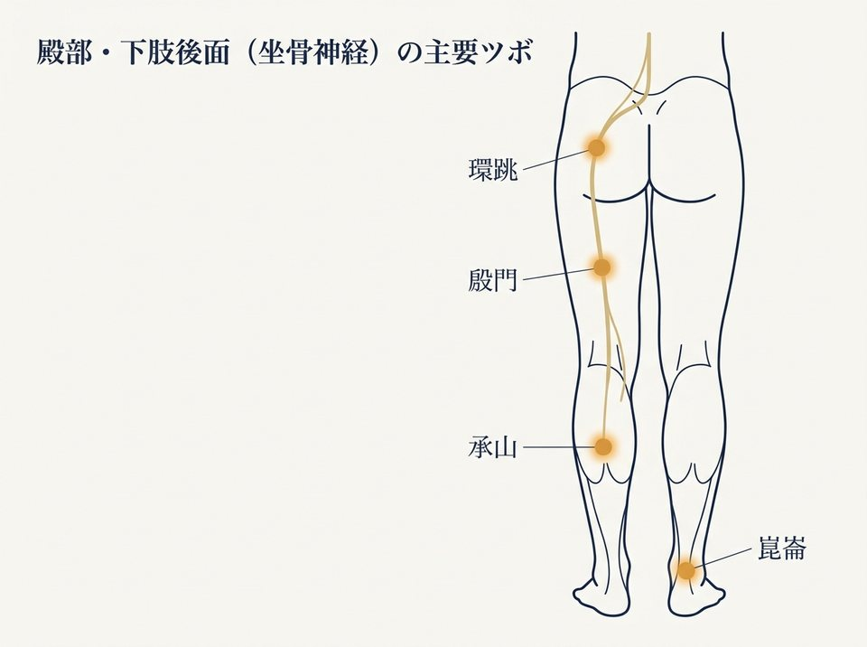

大腿骨頭壊死症の鍼灸
大腿骨頭への血流が途絶え壊死・圧潰する疾患。整形外科での専門治療を最優先とし生活の質を支えます。


院長YouTube解説・関連動画
原因がはっきりとわからない大腿骨頭壊死症もある
大腿骨頭壊死症の原因は、大腿骨頭壊死が起こることです。大腿骨頭壊死は、大腿骨頚部骨折などの外傷によって大腿骨頭への血流が変わってしまうことや放射線を使った病気の改善、減圧症など起こります。
原因がはっきりとわからない大腿骨頭壊死症もあります。
原因がわからない大腿骨頭壊死症では、たくさんの量や長い期間の飲酒をしたことや副腎皮質ステロイドを大量に使ったことが関係している場合と、全く原因がわからず発症している場合があると言われています。
大腿骨頭壊死症は、大腿骨の球状の頭部への血流が減少または停止することにより発生する深刻な病気であります。血流が失われると、骨組織は死ぬため壊死し、その結果、関節の機能不全と痛みが引き起こされることがあります。
1. 外傷
大腿骨の骨折や脱臼などの外傷が、大腿骨頭への血流を阻害することがあります。これは、骨頭の血管を直接損傷するか、血管周囲の組織に圧迫をかけることで起こります。
2. ステロイドの使用
高用量のステロイド薬を長期間使用すると、血流障害を引き起こすことがあります。ステロイドは、血管の収縮や血液の粘度の増加など、血流への影響をもたらすことが知られています。
3. アルコール過剰摂取
慢性的なアルコールの過剰摂取は、脂肪代謝の異常や血液の粘性の増加など、血流への複数の影響を引き起こすことが知られています。
4. 血液障害
鎌状赤血球症などの血液障害は、血流を阻害し、壊死を引き起こすことがあります。これらの障害は、血液の正常な流れを妨げる異常な赤血球の形成に関連しています。
5. 自己免疫の病気
ループスなどの自己免疫の病気も、血管の炎症や血液の粘性の変化などを引き起こすことがあり、壊死へとつながることがあります。
6. 脂肪塞栓症
脂肪が血管内に侵入し、血液の流れを阻害する脂肪塞栓症も、大腿骨頭壊死症の原因となることがあります。
7. 放射線
放射線は、癌の改善のためなどに使用されますが、大腿骨頭への血流を減少させる可能性があるため、注意が必要です。
8. 特発性の原因
いくつかの場合、大腿骨頭壊死症の原因は特定できません。これを特発性大腿骨頭壊死症と呼びます。
大腿骨頭壊死症の原因は多岐にわたります。外傷、薬物使用、ライフスタイル、遺伝的な要素、血液障害、自己免疫の病気などが、骨の血流減少を引き起こし、壊死につながる可能性があります。
大腿骨頭壊死症の症状は、強い痛み
大腿骨頭壊死症の症状は、強い痛みです。これは、大腿骨骨頭壊死が起きた部分がつぶれてしまうことで、つぶれた骨頭の周りに出血や浮腫などが起こることで、起こります。
立ち上がったときや歩いているときや体重をかけたときに痛みが出ることもあれば、安静にしているときにも痛みが続くこともあります。
痛みはつぶれた部分に対して血流がある側の骨から修復され、少しずつ軽くなっていくことが多いです。しかし、血流がない部分の修復は起きないため、多くの場合は修復されず痛みを繰り返し、股関節の変形や障害が進みます。
大腿骨頭壊死症は、大腿骨の頭部に血流が制限されるときに起こる骨の死滅を指します。この状態は、様々な症状を引き起こす可能性があり、進行に応じて異なる症状が現れることがあります。
1. 痛み
大腿骨頭壊死症の初期症状の一つが股関節の痛みです。この痛みはしばしば鈍く、次第に悪化していきます。
関節痛: 股関節の内側で感じることが多く、立つ、歩くなどの活動で強くなることがあります。
ふくらはぎ、膝への放散: 病状が進行すると、痛みは大腿部の外側、ふくらはぎ、または膝に放散することがあります。
2. 可動域の制限
大腿骨頭壊死症は股関節の可動域を制限することがあります。
運動制限: 股関節の屈曲、伸展、外転、内転などの動きが困難になることがある。
慢性的な進行: 病気が進行するにつれて、関節の可動域は次第に狭くなり、日常活動の制限を引き起こす可能性がある。
3. 跛行
関節の痛みと可動域の制限は、歩行パターンの変化や跛行を引き起こすことがあります。病気が進行すると、一般的には歩く際に不快感を感じるようになります。
4. 関節の変形
壊死が進行し、骨頭が崩壊すると、関節の変形が起こることがあります。
関節隙間の狭窄: 骨頭の壊死により関節隙間が狭くなることがある。
変形性関節症: 骨頭の変形と共に、変形性関節症の発展の危険性がある。
5. その他の合併症
大腿骨頭壊死症の進行により、他の合併症が発生する可能性があります。
関節炎: 慢性的な炎症が関節に発生する可能性がある。
筋萎縮: 使用が減少すると、関節周りの筋肉が萎縮することがある。
大腿骨頭壊死症の症状は、初期の軽い不快感から、病気が進行するにつれて悪化し、最終的には関節の変形や完全な機能喪失に至ることがあります。
大腿骨頭壊死症の改善方法は手術です。手術では、骨頭の体重を支える部分をずらすことによって症状が改善する可能性が考えられる場合は骨を切ってずらす骨切り手術を行います。
ただし、骨切り手術は、手術が難しいものになったり回復に時間がかかったりすることもあるため、十分に相談をした上で行うことが大事です。
高齢者や体力があまりない人の場合は、人工関節などを使って改善に取り組むこともあります。
大腿骨頭壊死症の改善は、病気の進行段階、年齢、一般健康、活動レベルなどによって異なる可能性があります。
1. 保存的な改善
a. 薬
鎮痛剤: 非ステロイド抗炎症薬（NSAIDs）などの鎮痛剤が痛みを管理するために処方されることがあります。
血流改善薬: 一部では、血流を改善する薬が効果的な場合がある。
b. 活動制限
体重負荷の制限: 杖やクラッチを使用して体重をオフロードすることで、壊死部位へのストレスを減らします。
運動制限: 高衝撃の運動を避け、低衝撃のエクササイズに切り替えることが推奨される場合があります。
c. 理学的な方法
運動計画: 筋力と可動域を改善し、関節機能を維持する個別の運動計画をすることが改善に役立つこともあります。
ガイトトレーニング: 歩行の質を改善するためのトレーニングを行います。
2. 手術
a. コアデコンプレッション
骨頭内の圧力を減らすために、骨の中に小さな穴を開ける手術を行います。手術の目的は、新しい血管の成長を促進し、健康な骨組織の成長を助けることです。
b. 骨移植
壊死部分の骨を取り除き、健康な骨で置き換える手術を行います。手術の目的は骨の強度を回復し、血流を改善することです。
c. 骨形成刺激
電気刺激または特定のプロテインを使用して、骨の成長を促進する手術を行います。手術の目的は壊死部位の修復を助けることです。
d. 関節置換術
骨頭の壊死部分を人工関節で置き換える手術を行います。手術の目的は関節の機能を回復し、痛みを除去することです。主に病気が進行している場合に行われます。
e. 骨切り術（オステオトミー）
骨を切断し、再配置する手術を行います。手術の目的は壊死部位への体重負荷を再分配し、病気の進行を遅らせることです。
3. 統合的な方法
栄養指導: 健康的な食生活と、必要に応じてサプリメントを取り入れます。
心理的サポート: 病気の慢性的な性質を管理するためのカウンセリングやサポートグループへ参加することが役立つことがあります。
大腿骨頭壊死症の改善方法は、個別の状況に応じて多岐にわたります。初期段階では、保存的なアプローチが有効である場合が多いですが、病気の進行に伴い、手術的な介入が必要になることがあります。
大腿骨頭壊死症を改善するためにガイトトレーニングを行うことがあります。これは、効率的かつ安全に歩行する能力を改善するためのプロセスです。これは、大腿骨頭壊死症の改善には非常に重要な改善の一部になることがあります。以下は、ガイトトレーニングにおける主要な側面とその実施方法です。
1. 目的の設定
大腿骨頭壊死症の場合のガイトトレーニングの主な目標は、痛みを減少させ、関節の負荷を最小限に抑え、身体の調和を取り戻し、自信を高めることです。
2. 評価
歩行の現在のパターン、強さ、柔軟性、バランスを評価し、個々のニーズに合った訓練計画を作成します。
3. 体重負荷の管理
特殊な歩行器具（例：杖、クラッチ）の使用や、水中歩行トレーニングなどを通じて、関節への圧力を減少させる方法が教えられます。
4. 運動強化
筋力トレーニング: 大腿部、臀部、下腿部の筋肉を強化するエクササイズを行います。
ストレッチ: 正しい歩行パターンを促進するために必要な柔軟性を提供するストレッチングルーチンを行います。
5. バランスと調和
バランスエクササイズ: 安定性と調和を向上させるためのバランス訓練を行います。
歩行リズムの調整: 歩行のリズムと時計のリズムを調整する訓練を行います。
6. 機能的訓練
階段登り: 階段を登る技術の練習を行います。
坂道歩行: 坂道での歩行訓練を行います。
不整地の歩行: 異なる地形での歩行能力を高める訓練を行います。
7. 教育
自宅でのエクササイズ: 家庭で続けるための個別のエクササイズプランを行います。
ライフスタイルの調整: 日常生活における適切な体重負荷管理と活動の調整を行います。
8. テクノロジーの利用
ガイト分析: ビデオ解析や専門の機器を使用して歩行の詳細な分析を行う場合があります。
バイオフィードバック: 筋肉活動などの生理的情報を提供し、自己認識を高める。
ガイトトレーニングは、大腿骨頭壊死症の場合の歩行能力と生活の質を向上させるために、多岐にわたるアプローチを取り入れることが多いです。専門家と密接に連携し、個別化されたプランに従うことは、成功への鍵となるでしょう。
大腿骨頭壊死症の改善には手術が選択されることが多いです。手術のタイミングを遅らせるためにできることも多くあります。
減量をしたり股関節を安定させたりするために筋力トレーニング行ったり、医師の生活指導を受けたり、杖を使ったり、運動を制限したりすることです。
このようなことに取り組むことは、手術を行うタイミングを遅くするために有効であると言われています。
▼ 詳しく知りたい項目だけタップして開けます（全項目の医学解説を収録）
01. 原因とメカニズム
なぜ症状が起きるのか・鍼灸の作用機序を読む
▼
01. 原因とメカニズム
なぜ症状が起きるのか・鍼灸の作用機序を読む
大腿骨の球状の頭部（大腿骨頭）への血流が減少・途絶えて骨組織が壊死し、体重がかかる部分がつぶれることで周囲に出血や浮腫が生じて強い痛みを引き起こす疾患です。骨折・脱臼などの外傷や放射線治療・減圧症など原因が明らかな「二次性」と、ステロイド大量使用や慢性的な多量飲酒の関与、あるいは原因不明の「特発性」があります。
なぜ鍼灸で改善へ向かうのか？（作用機序の図解）
大腿骨頭壊死症に対する鍼灸は、トリガーポイント解放と疼痛抑制系の作用機序を通じて、お体本来の回復力を引き出します。
手技では届きにくい深層筋の硬結（トリガーポイント）へ繊細な鍼で直接刺激を届けます。
CGRPや一酸化窒素の放出により微小血管が拡張し、滞っていた発痛物質の洗い流しを促します。
脊髄後角で痛み信号を遮断し、脳幹からの内因性鎮痛物質（エンドルフィン等）の働きを高めます。
防御性の筋スパズムが解け、関節可動域と本来の動きやすさが段階的に回復します。
02. よくあるお悩み
このような症状はありませんか？（4項目）
▼
02. よくあるお悩み
このような症状はありませんか？（4項目）
- ✓立ち上がりや歩行・体重をかけたときに股関節に強い痛みが出る
- ✓安静にしていても股関節が痛み、太もも外側や膝・ふくらはぎへ広がる
- ✓股関節の曲げ伸ばしや開閉が制限され、歩き方（跛行）が変わってきた
- ✓ステロイド長期使用や多量飲酒、過去の股関節外傷の既往がある
03. 当院の施術アプローチ
施術の進め方・改善のポイントを見る
▼
03. 当院の施術アプローチ
施術の進め方・改善のポイントを見る
04. ツボ詳細・セルフケア一覧
股関節・膝・太もものツボ図解とセルフケア（6穴）
▼
04. ツボ詳細・セルフケア一覧
股関節・膝・太もものツボ図解とセルフケア（6穴）
実際の施術ではお一人おひとりの体質・症状に合わせて選穴しますが、股関節・膝・太もも（変形性膝関節症・ランナー膝等）の筋骨格系トラブルの臨床でよく用いられる代表的なツボの目安です。
| ツボ名 | 位置の目安 | 主な狙い | セルフケアの注意点 |
|---|---|---|---|
| 梁丘（りょうきゅう） | 膝のお皿の外上角から指3本分上の太もものくぼみ | 大腿四頭筋の緊張緩和・階段昇降や立ち上がり時の膝痛ケア | 膝を軽く伸ばして力を抜いた状態で優しく押します。 |
| 血海（けっかい） | 膝のお皿の内上角から指3本分上の筋肉のくぼみ | 膝内側の痛み・内側広筋の血流改善とむくみケア | 強く押しすぎず、手のひらで温めながらじんわり圧迫します。 |
| 犢鼻（とくび） | 膝を軽く曲げたとき、お皿の下の外側にできるくぼみ | 膝関節前面の痛み・関節周囲の循環サポート | 関節に水が溜まっている・熱感がある時期は直接押さず温めも控えます。 |
| 足三里（あしさんり） | 膝のお皿の下外側（犢鼻）から指4本分下のすねの外側 | 下肢全体の筋疲労回復・膝周囲の筋バランスと鎮痛サポート | セルフ灸や指圧の定番穴として毎日続けやすいツボです。 |
| 陽陵泉（ようりょうせん） | 膝の外側下にある丸い骨（腓骨頭）の斜め下のくぼみ | 腸脛靭帯炎（ランナー膝）・筋腱の柔軟性回復 | しびれが出やすい神経の近くのため、優しい圧で調整します。 |
| 陰陵泉（いんりょうせん） | すねの内側の骨を膝方向へなぞり、指が止まるくぼみ | 鵞足炎・膝内側の張り・関節周囲のむくみ緩和 | 骨の際を無理にグリグリ押さず、気持ちよい範囲で押します。 |
05. 医学的根拠・国際査読論文（PubMed / Cochrane）
科学的エビデンス・出典リンク一覧（4件）
▼
05. 医学的根拠・国際査読論文（PubMed / Cochrane）
科学的エビデンス・出典リンク一覧（4件）
国際的な医学データベース（PubMed・Cochrane等）で報告されている股関節・膝・太もも（変形性膝関節症・ランナー膝等）の筋骨格系トラブル領域の代表的な査読済み鍼灸研究をまとめています（標準治療との併用や研究上の限界を含めて正確に掲載）。
| 年・研究デザイン | 対象・規模 | 主な結果 | 限界・出典 |
|---|---|---|---|
| 2018年 IPDメタ解析 | 慢性筋骨格痛・頭痛 39 RCTs（n=20,827） | 全領域でシャム鍼・無治療比とも有意優位（P<0.001）、1年後も効果低下約15%で持続。 | 対照設定により効果量変動。 J Pain (PMID: 29198932) |
| 2020年 Cochraneレビュー | 慢性非特異的腰痛 33 RCTs（n=8,270） | 無治療比で直後疼痛（MD -20.32）と機能（SMD -0.53）が臨床的に有意改善。有害事象は軽微。 | 施術者盲検化不可・確実性は中等度〜非常に低。 Cochrane (PMID: 33306198) |
| 2024年 多施設RCT | 慢性坐骨神経痛 216名（6病院・52週追跡） | 4週時点の下肢痛VAS減少30.8mm vs 14.9mm（差-16.0mm, P<0.001）、52週後も持続。 | 中国3次病院限定・施術者盲検化不可。 JAMA Intern Med (PMID: 39401008) |
| 2016年 メタ解析 | 変形性膝関節症 10 RCTs | 短期（13週）で疼痛（WMD -1.24, p<0.001）と機能（p<0.001）が有意改善、26週も機能維持（p=0.016）。 | 試験間の異質性が高く運動療法併用が推奨。 JBJS Am (PMID: 27655986) |
参考文献・出典
- 2018年 IPDメタ解析（慢性筋骨格痛・頭痛 39 RCTs（n=20,827））— J Pain (PMID: 29198932)
- 2020年 Cochraneレビュー（慢性非特異的腰痛 33 RCTs（n=8,270））— Cochrane (PMID: 33306198)
- 2024年 多施設RCT（慢性坐骨神経痛 216名（6病院・52週追跡））— JAMA Intern Med (PMID: 39401008)
- 2016年 メタ解析（変形性膝関節症 10 RCTs）— JBJS Am (PMID: 27655986)
06. よくある質問（FAQ）
よくあるご質問を見る（2件）
▼
06. よくある質問（FAQ）
よくあるご質問を見る（2件）
Q. 大腿骨頭壊死症は鍼灸で壊死した骨を治せますか？
いいえ、血流が途絶えて壊死した骨組織自体を鍼灸で修復することはできません。整形外科での専門的な診断・治療が最優先となります。
Q. 手術のタイミングを遅らせるためにできることはありますか？
医師の生活指導のもと、減量や杖の使用による体重負荷の軽減、運動制限、股関節を安定させる無理のない筋力維持などが有効とされています。
あわせて読まれる関連疾患（筋肉、骨のお悩み）
お尻から足後ろ側へ広がる痛みやしびれ。原因を見極め、腰・臀部・股関節の深層筋へ的確にアプローチします。
40〜60代に多い肩の激痛・可動域制限（五十肩）を、炎症期と拘縮期の見極めと鍼灸・全身バランス調整で改善する解説。
HTLV-1ウイルス感染者の一部に発症し、脊髄の炎症により両下肢のつっぱり・歩行障害や排尿障害が徐々に進む疾患です。
成長期の中高生がスポーツ中の急激な筋収縮により、骨盤の骨端線付着部で骨の一部が剥がれて起こる骨折です。
免疫系が自身の筋組織を攻撃して炎症と変性を起こし、対称性の筋力低下や筋痛をきたす全身性のリウマチ性疾患群です。
骨端軟骨とその周囲の軟部組織にX線上の点状石灰化像がみられ、低身長や関節・脊柱の異常を伴う遺伝性疾患群の総称です。
CLINICAL RECOVERY CASES
✨ 実際の臨床改善事例・回復経過を見る
銀座本院をはじめ各院での実際の改善事例を症状別に絞り込んでご確認いただけます。
おひとりで悩まず、まずはご相談ください
銀座本院・川口・大宮・横浜・博多・田無の各院でご予約を承っております。